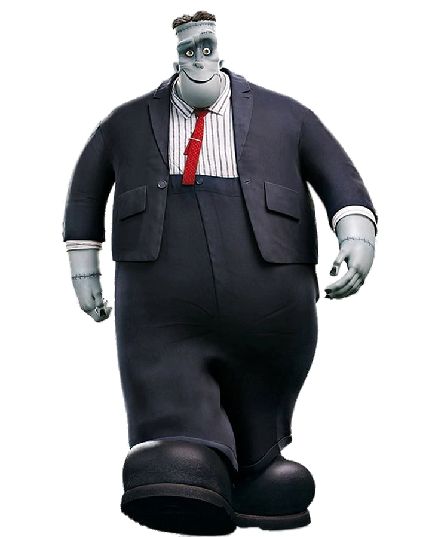

Frankenstein
"He's my right arm cousin!"
This line was said by Frankenstein.Frank has light blue skin, green eyes, and black hair. He wears a blue suit with a white stripped shirt, red tie, and black boots. Comparing with humans, his limbs are relatively large. He is extremely powerful. He loves parties.